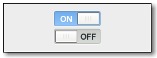

Gtk.Switch
Example
Methods
| Inherited: | Gtk.Widget (256), GObject.Object (33), Gtk.Buildable (10), Gtk.Actionable (5), Gtk.Activatable (6) |
|---|
| static | new() |
| get_active() | |
| get_state() | |
| set_active(is_active) | |
| set_state(state) |
Virtual Methods
| Inherited: | Gtk.Widget (82), GObject.Object (7), Gtk.Buildable (10), Gtk.Actionable (4), Gtk.Activatable (2) |
|---|
| do_activate() | |
| do_state_set(state) |
Properties
| Inherited: | Gtk.Widget (38), Gtk.Actionable (2), Gtk.Activatable (2) |
|---|
| Name | Type | Flags | Short Description |
|---|---|---|---|
| active | bool | r/w | Whether the switch is on or off |
| state | bool | r/w | The backend state |
Style Properties
| Inherited: | Gtk.Widget (17) |
|---|
| Name | Type | Default | Flags | Short Description |
|---|---|---|---|---|
| slider-width | int | 36 | r | The minimum width of the handle |
Signals
| Inherited: | Gtk.Widget (69), GObject.Object (1) |
|---|
| Name | Short Description |
|---|---|
| activate | The ::activate signal on Gtk.Switch is an action signal and emitting it causes the switch to animate. |
| state-set | The ::state-set signal on Gtk.Switch is emitted to change the underlying state. |
Fields
| Inherited: | Gtk.Widget (1), GObject.InitiallyUnowned (3), GObject.Object (3) |
|---|
| Name | Type | Access | Description |
|---|---|---|---|
| parent_instance | Gtk.Widget | r |
Class Details
- class Gtk.Switch(**kwargs)
Bases: Gtk.Widget, Gtk.Actionable, Gtk.Activatable
Gtk.Switch is a widget that has two states: on or off. The user can control which state should be active by clicking the empty area, or by dragging the handle.
Gtk.Switch can also handle situations where the underlying state changes with a delay. See Gtk.Switch ::state-set for details.
- static new()
Returns: the newly created Gtk.Switch instance Return type: Gtk.Widget Creates a new Gtk.Switch widget.
New in version 3.0.
- get_active()
Returns: True if the Gtk.Switch is active, and False otherwise Return type: bool Gets whether the Gtk.Switch is in its “on” or “off” state.
New in version 3.0.
- get_state()
Returns: the underlying state Return type: bool Gets the underlying state of the Gtk.Switch.
New in version 3.14.
- set_active(is_active)
Parameters: is_active (bool) – True if sw should be active, and False otherwise Changes the state of sw to the desired one.
New in version 3.0.
- set_state(state)
Parameters: state (bool) – the new state Sets the underlying state of the Gtk.Switch.
Normally, this is the same as Gtk.Switch :active, unless the switch is set up for delayed state changes. This function is typically called from a Gtk.Switch ::state-set signal handler.
See Gtk.Switch ::state-set for details.
New in version 3.14.
- do_activate()
Type: virtual
Signal Details
- Gtk.Switch.signals.activate(switch)
Signal Name: activate Flags: ACTION, RUN_FIRST Parameters: switch (Gtk.Switch) – The object which received the signal The ::activate signal on Gtk.Switch is an action signal and emitting it causes the switch to animate. Applications should never connect to this signal, but use the notify ::active signal.
- Gtk.Switch.signals.state_set(switch, state)
Signal Name: state-set
Flags: Parameters: - switch (Gtk.Switch) – The object which received the signal
- state (bool) – the new state of the switch
Returns: True to stop the signal emission
Return type: The ::state-set signal on Gtk.Switch is emitted to change the underlying state. It is emitted when the user changes the switch position. The default handler keeps the state in sync with the #GtkState :active property.
To implement delayed state change, applications can connect to this signal, initiate the change of the underlying state, and call Gtk.Switch.set_state () when the underlying state change is complete. The signal handler should return True to prevent the default handler from running.
Visually, the underlying state is represented by the trough color of the switch, while the Gtk.Switch :active property is represented by the position of the switch.
New in version 3.14.
Property Details
- Gtk.Switch.props.active
Name: active Type: bool Default Value: False Flags: r/w Whether the Gtk.Switch widget is in its on or off state.
- Gtk.Switch.props.state
Name: state Type: bool Default Value: False Flags: r/w The backend state that is controlled by the switch. See Gtk.Switch ::state-set for details.
New in version 3.14.